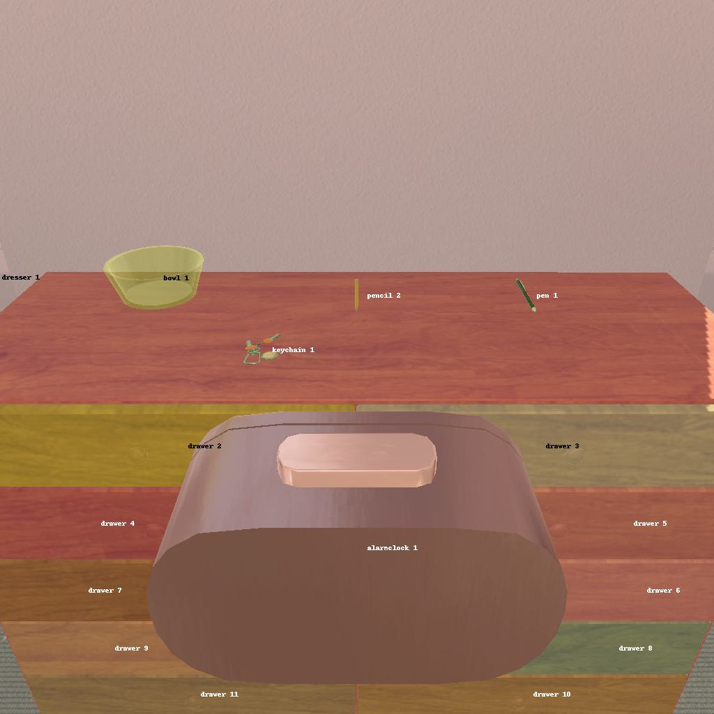

---------------------------------------------------------task: 0---------------------------------------------------------
--------------------------------------------------------------------------------------------------------------------------------------------------------------------
--------------------------------------------------------------------------------------------------------------------------------------------------------------------
Step:--------------------------------------------------------------------------8-------------------------------------------------------------------------------
----------------------------------------
VLM Prompt:
Image1:
**Instruction**
1. Analyze the provided image to identify all visible household objects, focusing on those relevant to the task description "look at alarmclock under the desklamp."
2. Use the analysis of the image and the task hint "The agent must find an object of the desired type, locate and turn on a light source with the desired object in-hand." to answer the question: what is the most reasonable action in the choices for the task description "look at alarmclock under the desklamp"?
4. Decide and write the answer using the template: The answer is: (i): , where i is the real number. If there is no desired object in the image, search every place based on **Initial Observation** to find the object. And if no one is exactly correct, choose a similar answer.
**Initial Observation**
You are in the middle of a room. Looking quickly around you, you can see bed (1), sidetable (1), drawer (1-11), dresser (1), safe (1), laundryhamper (1), garbagecan (1)
**Answer Choices**
(1): go to bed 1
(2): go to sidetable 1
(3): go to drawer 1
(4): go to dresser 1
(5): go to drawer 3
(6): go to drawer 4
(7): go to drawer 5
(8): go to drawer 6
(9): go to drawer 7
(10): go to drawer 8
(11): go to drawer 9
(12): go to drawer 10
(13): go to drawer 11
(14): go to safe 1
(15): go to laundryhamper 1
(16): go to garbagecan 1
(17): open drawer 2
(18): close drawer 2
(19): put alarmclock 1 in/on drawer 2
(20): examine drawer 2
**Answer**
Let's think step by step by following the instructions.
----------------------------------------
----------------------------------------
Original Response:
The task description mentions "look at alarmclock under the desklamp." From the image, we can see "alarmclock 1" on top of "drawer 2," which seems to be a dresser. However, there is no desklamp visible in the image provided.
Based on the "Initial Observation," there are no mentions of a desklamp in the immediate surroundings, so we can assume that the desklamp is not visible in the image provided and might be elsewhere in the room.
Given the task hint, the agent needs to find an alarmclock and then locate and turn on a light source (desklamp) with the alarmclock in hand. Since the alarmclock is already visible on the dresser (drawer 2), the agent does not need to search every place to find the object.
Based on the answer choices provided and the absence of a desklamp in the image, the most reasonable action would be to take the alarmclock, which involves interacting with drawer 2 where the alarmclock is located. Therefore, the most appropriate action would be to open drawer 2 to potentially pick up the alarmclock.
The answer is: (17): open drawer 2.
----------------------------------------
----------------------------------------
>>> Refine Original VLM Response and Get Pure Action: open drawer 2
----------------------------------------
-----------------------------------------------------------------
Running time: 9.161859035491943 seconds
Total Money: 0.16037
-----------------------------------------------------------------
-----------------------------------------------------------------
Text Observation:You open the drawer 2. The drawer 2 is open. In it, you see a bowl 1, a keychain 1, a pen 1, and a pencil 2.
-----------------------------------------------------------------
UNSUCCEED